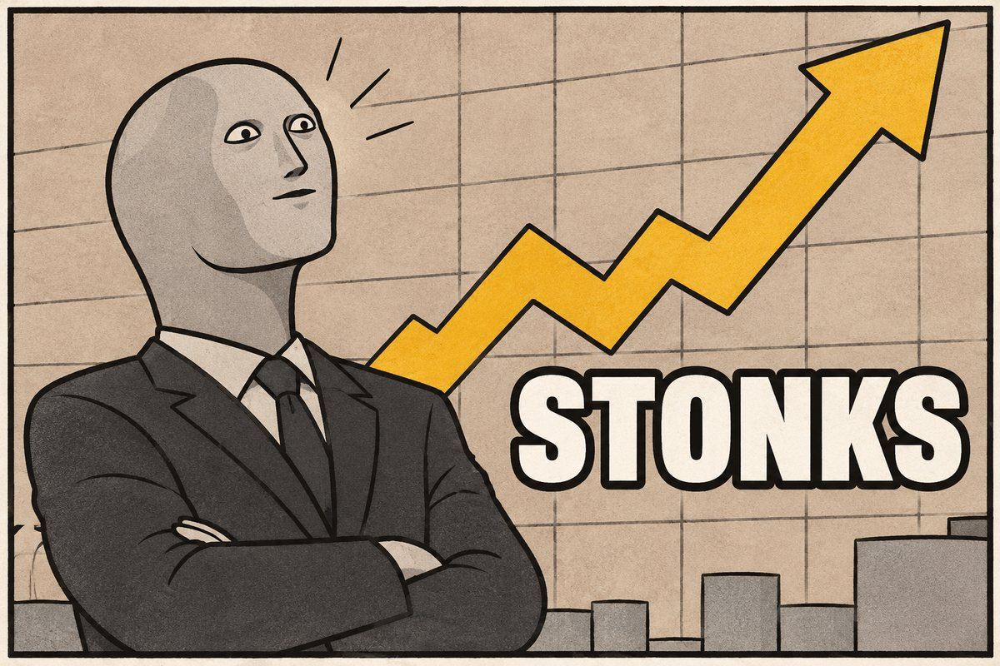
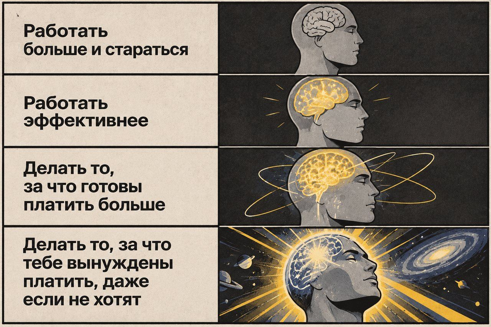
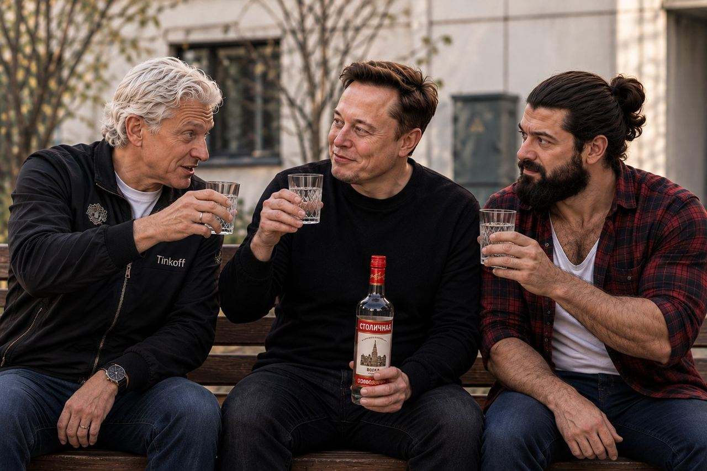
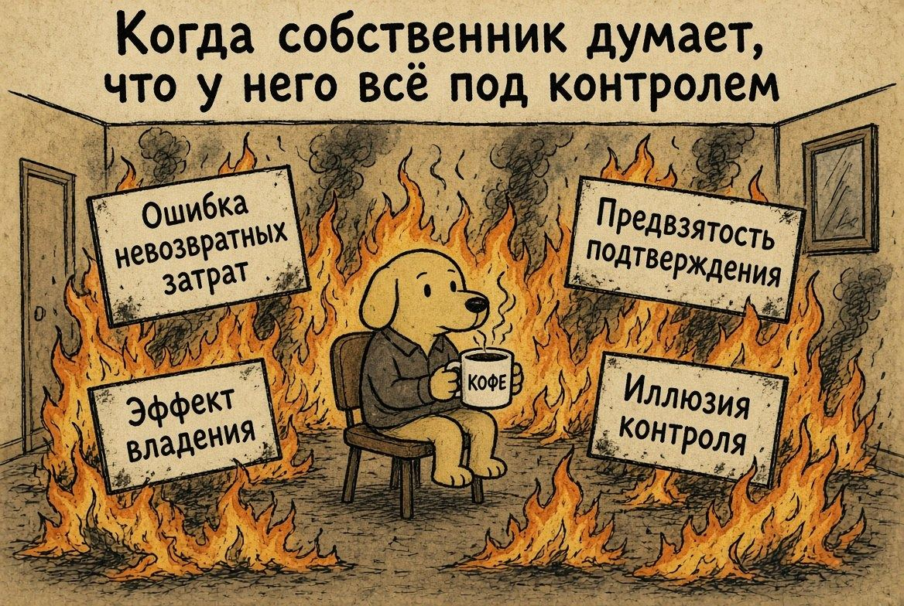
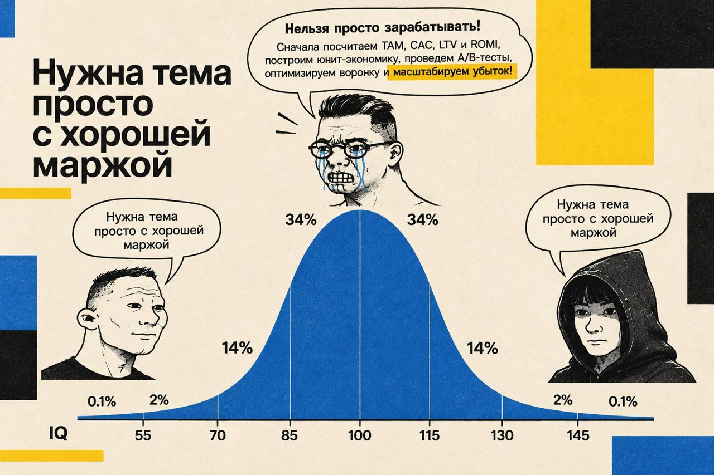
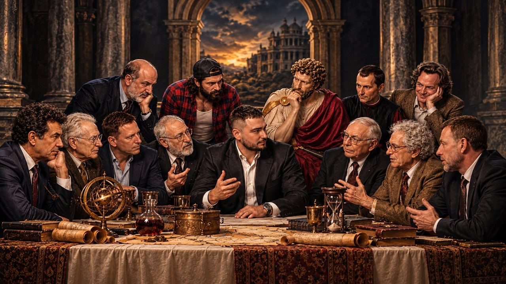

Активирую 99% работы, которую вы уже сделали
Деньги делаются не на подвижничестве с нуля, а на том, что вы уже накопили: капитал, склады, связи, доступы. Резон не строит новый завод. Он ищет тот 1% рычага, который превращает накопленные активы и заторы в живой кэш на руках.

Я вырос в Анадыре. Это город примерно на 14 тысяч человек, а бетонная полоса его аэропорта рассчитана на тяжёлую авиацию. По гражданской «юнит-экономике» такой бетон на вечной мерзлоте не окупился бы никогда.
Полосу залили в 1950-х как аэродром подскока для стратегических бомбардировщиков, а гражданские рейсы до сих пор держатся на субсидированных тарифах. Итог: спустя 70 лет готовый бетон принимает всё, вплоть до широкофюзеляжных Boeing 777. Они летают из Москвы в Анадырь каждую неделю. Так сделали возможность для обычных людей, и очевидную. Методология Резона сможет найти для вас и неочевидную.
От Рокфеллера до Цукерберга большие деньги работают одинаково: 99% тяжёлой работы уже сделано до вас или вами самими. Нужно увидеть, где пролит бетон, и включить последний процент.

У вас сильная команда. Зачем вам ещё один взгляд?
Вокруг собственника с годами вырастает система: топ-менеджеры, советники, подрядчики, партнёры. У каждого свой бюджет, свои полномочия и своё место, которое жалко терять. Это не заговор, это обычные стимулы. Интересы собственника и людей вокруг него совпадают не всегда.
Я пришёл не за местом за столом. Я пришёл с предложением сделки
Мне не нужны ваша должность, доля, зарплата или место рядом с вами. Советником, который живёт расположением одного человека, я не буду: у Резона своя модель, клиентов может быть много. Поэтому мне нечего защищать в вашей оргструктуре и некому подыгрывать. Я ищу экономические возможности, и всё.
Не нужно быть ниже собственника, чтобы приносить ему пользу. И не нужно быть выше, чтобы говорить на равных.
Это не юридическая гарантия, а устройство моих стимулов: я заинтересован только в найденной сделке или спасённом капитале. Я помогаю найти решение, если оно возможно.
Три боли бизнеса и цель вместо средства

Оборот не критерий. Я смотрю на то, что вы можете мобилизовать
У компании с миллиардом может не быть ни одного интересного рычага. У предпринимателя с оборотом в разы меньше бывают уникальный актив, доступ или связь, ради которых стоит работать. Размер ничего не гарантирует и ничего не исключает.
Нет предмета для работы: скажу в первые минуты и не буду тянуть.
Что вы получаете за 40 000 ₽: два возможных результата
Два часа работы, а не знакомство. Разбираю ваши ресурсы, активы, компетенции, доступы, ограничения и всё, что лежит без дела, и ищу, где может быть лишняя ценность.
Карту можно реализовать самому: сопровождение я не навязываю.
Не обязательно строить ещё один бизнес, чтобы заработать дополнительные деньги
Многие привыкли считать: чтобы зарабатывать больше, нужно больше строить, нанимать, производить и управлять. Новые подразделения, расширение производства, инфраструктура, операционные обязательства, годы на новый бизнес. Но масштаб не равен эффективности.
Иногда дополнительная прибыль уже лежит в ресурсах, связях, доступах, информации и рыночных дисбалансах, которые вы просто не считаете. У действующего собственника есть то, что другие годами пытаются получить: деньги, доступы, доверие контрагентов, опыт и возможность быстро принимать решения. Достаточно обнаружить, где такой ресурс можно применить выгоднее. Резон помогает такие возможности находить и проверять.
Не путайте создание бизнеса с созданием себе работы.
Не всякая возможность требует предприятия, не всякая прибыль требует найма, не всякий рост дохода требует роста нагрузки. Лёгких денег это не обещает.
Ваш опыт остаётся основой. Наука добавляет к нему рычаги
Вы строили бизнес на свои деньги, в неопределённости и годами. Это актив, и обнулять его никто не предлагает. Вопрос другой: какую ещё ценность можно извлечь из уже созданного, если к опыту добавить инструменты, которыми пользуются экономисты и переговорщики.
Рыночная цена результата не зависит от того, сколько сил на него ушло. Это не обесценивает пройденный путь: просто прошлые затраты не должны ограничивать будущие решения. А если привычная практика окажется лучше альтернативы, я так и скажу.
Капитал не сводится к деньгам
Капитала у вас больше, чем вы думаете. Его просто никто не считал. Что в нём главное, у каждого своё: у одного доверие клиентов, у другого доступ к поставщику, у третьего знание, которого нет у рынка. Это я нахожу в разборе.
Помимо денег, навыков, доступов и активов в капитал входят деловые связи, репутация и доверие, недвижимость, свободные мощности, действующие контракты, эксклюзивные отношения, контроль над каналами поставок, доступ к дефицитным ресурсам и способность быстро принимать решения и организовывать сделки.
Каналы продаж
Те, кто уже покупает у вас или готов купить по звонку: дилеры, постоянные оптовики, наработанная база заказчиков. Считаем не охваты, а регулярность платежей и маржу со сделки.
Деньги
Сумма, потеря которой не ломает ни жизнь, ни бизнес.
Навыки
То, что вы делаете лучше большинства и за что платят.
Доступы
Двери, которые открываются вам и закрыты другим: поставщик, закупщик, площадка, лицензия, человек, принимающий решения. Актив, которого нет ни в одном балансе.
Активы
Оборудование, помещение, запасы, лицензии.
Непубличная информация
Знание рынка, цен и людей, которого нет у остальных и которое не найдёт ИИ.
«В мире совершенной конкуренции вся прибыль оказывается вытеснена конкуренцией»
Где мы ищем асимметрии
Это не каталог готовых предложений, а направления аналитического поиска. Мы ищем не только проблемы предприятий, а неиспользованный экономический потенциал: компания может быть вполне благополучной и всё равно упускать значительные коммерческие возможности. Считаем это через экономику информации, теорию вероятностей и управление рисками.
Закупка идёт не только по регламенту
Тендерная документация описывает, как должно быть. Как есть, решают реальные центры принятия решений, доверие, знакомства и тот, кто первым узнал о потребности. Кто знает, тот понимает.
Взятки, сговор и фальсификацию закупок в этот список не включаем: они плохо считаются и ещё хуже заканчиваются. Резон ищет экономику, а не статью.
Возможно, рядом с вами кто-то гребёт деньги лопатой, используя те же ресурсы
Ваш поставщик, партнёр, конкурент или компания из совершенно другой отрасли может зарабатывать на тех же активах и доступах значительно больше.
Резон использует экономический реверс-инжиниринг: по неполной информации восстанавливает вероятную механику чужих бизнес-моделей. Один и тот же ресурс приносит разные деньги, смотря какая у владельца бизнес-модель и где он стоит в цепочке.
Подтверждённая информация из доступных источников.
Реконструкция вероятной экономики по неполным данным. Предполагаемую маржинальность конкурентов за установленную не выдаём.
Проверяемые варианты применить найденные механизмы в вашем бизнесе. Проверяем малой ставкой и прибыль не обещаем.
Работаем только с законно полученной информацией: открытые данные, ваши документы, коммерческие предложения, интервью и собственные наблюдения.
Пять шагов от «что у меня есть» до решения
Смотрю на ситуацию инструментами экономической науки, теории игр и психологии решений, а реализуемость проверяю опытом реальных сделок. Это не генерация идей, а систематический поиск и проверка. Потолок потерь называю до первой сделки, доход не обещаю.
Предпочитаю возможности с понятной экономикой и коротким циклом проверки и реализации. Мы не против сложных сделок. Мы против плохой экономики собственного участия.
Где поставить свой шлагбаум
Ищу место, где вы можете монополизировать или квазимонополизировать создание ценности. Или захватить узкое горлышко и поставить там свой шлагбаум.
Пока вы продаёте свои часы, вы зарабатываете, но не копите капитал. Капитал работает, когда деньги приходят от актива или рычага, а не только от часов вашего личного труда. Поэтому я ищу не только то, что вы умеете делать, но и то, чем вы можете владеть.
Монополия на создание ценности
Ищем, где ценность создаёте только вы или почти только вы и где конкурент не повторит это быстро. Монополия или квазимонополия.
Узкое горлышко
Ищем точку, через которую обязаны пройти чужие деньги, сделки или клиенты. Занимаем её и ставим шлагбаум: кто проходит, тот платит.
Деньги почти всегда лежат между компаниями
Обычный консультант копается в вашей бухгалтерии и рисует графики по прошлогодней выручке. Это взгляд в заднее стекло. Экономическая разведка Резона смотрит не внутрь одного ООО, а на всю поляну вокруг вас: кто кому продаёт, кто сидит жирной прокладкой, у кого застряли деньги и кто реально держит узкое горлышко.
Разведка даёт картину поляны, реверс-инжиниринг вскрывает механику чужих денег, поиск асимметрий находит перекос, а проверка микроставкой доказывает реальным рублём, существует ли сделка на самом деле.
На разборе бьём в главное: кто в этой цепи реально создаёт ценность, а кто просто сидит на телефоне? У кого заморожен кэш и висят риски? Иногда вместо выжимания 2% экономии в своём цехе проще пересадить себя на другое место в цепочке.
Никаких нелегальных «пробивов» налоговой тайны и закрытых баз. Работаем строго на законном топливе: ЕГРЮЛ и история смен долей, официальная бухотчётность, арбитраж/банкротства/залоги, госзакупки и тендеры, открытая таможенная статистика ВЭД, цены регионов, площадки и лицензии + ваши документы.
ИИ за минуты перемалывает отчёты, суды и графы связей, склеивает разрозненные ООО и отлавливает аномалии в балансах. Но он не знает, как заносят на закупках, как банкротят завод в Британии и когда директор врёт. Деньги делает связка: скорость ИИ + системная база МИФИ + 15 лет реальных сделок.
Разбор ваших переговоров
Разбираю ваши переговоры с партнёрами, поставщиками, клиентами, регуляторами и силовиками*. Соединяю две вроде бы несовместимые школы: тактическую эмпатию переговорщиков ФБР (Крис Восс) и жёсткую Кремлёвскую школу переговоров (управление нуждой, ролями, перехват инициативы и защита от прессинга). Под капотом — теория игр и поведенческая экономика.
Беру запись и переписку — пересказ врёт, слишком велики искажения. Показываю, где вы сдали позицию, чего на самом деле хотела другая сторона и что говорить дальше.
Дальше два варианта: вы идёте в разговор сами по сценарию, либо в проекте за стол вместо вас (или рядом с вами) сажусь я. На меня у другой стороны нет личных рычагов: давить на обиды, дружбу и вину не выйдет. Прессинг беру на себя, вы остаётесь над схваткой.
Застарелые конфликты и несправедливые партнёрства
Распутываю застарелые конфликты и достаю ваше из несправедливых партнёрств. На выходе вы получаете план. Смотрим через теорию игр, теорию стимулов и институциональную экономику: кому выгодно тянуть, кому договариваться и во что обходится каждый вариант.
Иногда главная коммерческая возможность заключается не в том, чтобы найти нового партнёра, а в том, чтобы перестать терять деньги из-за старого.
Учредители «торговались» купюрами из «Монополии»
В ситуации внутреннего кризиса между учредителями я предложил провести «торги» по справедливому распределению активов, используя в качестве нейтрального инструмента купюры из настольной игры «Монополия».
Это разрядило обстановку: стороны пришли к согласию и завершили раздел без судебных споров.
Иногда план заканчивается словами «это не стоит ваших усилий». Это тоже результат: вы перестаёте платить за конфликт временем и деньгами. Юридические шаги согласуются с вашим юристом.
6 узлов вместо ста вопросов про «общие ценности»
Красивые речи на старте стоят ноль, когда начинаются кассовые разрывы или появляется первая лишняя котлета денег. Проверяйте эти 6 точек до устава — или доставайте по ним своё при развале.
4 типа людей в деле — без сопливых тренингов
Забудьте сказки про «командный дух». Есть всего два вопроса к человеку: делает ли он вид, что крутой (эффектность), и есть ли от него деньги в кассе (эффективность). Отсюда 4 реальных типа без сложных графиков.
Мотор
Берёт задачу и тащит её к деньгам независимо от погоды на рынке. Не ноет, закрывает сделки, подтягивает за собой остальных. Редкий зверь — таких надо перекупать и платить им выше рынка.
Исполнитель
На планёрках молчит, презентации не рисует, но отгрузки идут и цифры не горят. Главный косяк собственника — не замечать тихого работягу за громкими голосами, недоплатить и потерять. Ушёл Исполнитель — цех встал.
Громкий пиздобол
Самая дорогая дыра в ФОТ. Красиво говорит, уверенно кивает, просит бюджеты и команду — а вместо денег каждый раз приносит отмазки («рынок просел», «подрядчик подвёл»). Опасен тем, что на собеседовании продаёт себя лучше вас.
Серая мышь (тихий пиздобол)
Прячется в тени за громкими пиздоболами, не спорит, не лезет в драку, не берёт ответственность и годами проедает оклад «за 5 лет стажа». В кризис сливается первой.
Когда моя прошлая экспортная модель сдохла в 2023-м, я сам прошёл около 1000 откликов и ~50 собеседований. Компании сами себе роют могилу тупыми HR-фильтрами: отсеивают охотников, которые умеют закрывать деньги, и нанимают ухоженных пиздоболов с гладкой речью.
Они не предатели. Они просто реагируют на стимулы.
Главная ловушка собственника — морализаторство: «Я плачу ему выше рынка, а он саботирует», «Мы начинали с нуля, а он меня предал». Для дела «предательство» не категория. Есть баланс стимулов и цена последствий.
Платим жирные деньги только Моторам и Исполнителям; с пиздоболами всех мастей расстаёмся без благотворительности «за 5 лет стажа». Лучше с умным потерять, чем с дураком найти.
Умножение на ноль даёт ноль
Резон работает как мультипликатор. Если сегодня ваш капитал, доступы, каналы продаж и рычаги равны нулю, моя работа результата не даст. Ноль на любое число даёт ноль.
Представьте: Илон Маск, Олег Тиньков и Алекс Хормози разбирают вашу ситуацию и ищут, как помочь, но не могут просто дать вам денег или инсайд. Если в итоге они плюнут и пойдут за водкой, не помогу и я.

Сначала разберитесь, чего вы хотите
Если у вас кризис смыслов: вы не знаете, чего хотите, и не можете разобраться в отношениях, здоровье, устройстве мира или своей миссии, Резон не поможет. Зарабатывать бессмысленно, пока непонятно, ради чего.
Если деньги на это есть, могу порекомендовать профессионалов.
Любителям статусных декораций и карго-культа
Если для принятия решений вам обязательно нужны:
вам точно не ко мне.
Я не продаю социальные сигналы и не пускаю пыль в глаза.
Я работаю как полевой хирург: ко мне приходят не любоваться на часы врача, а когда нужно остановить артериальное кровотечение в бизнесе, разрезать застарелый конфликт и вытащить активы из-под удара.
Если вам важнее, КТО говорит (форма и понты), а не ЧТО говорят (цифры и риски), вы гарантированно переплатите шарлатанам. Не тратьте моё и своё время.
Соматика, биохакинг и духовные практики
Я не заставляю медитировать и не прописываю диеты. Физическое здоровье критично: если тело собственника разваливается от стресса, никакой бизнес не выдержит перегрузок. Но разбор Резона не про спорт и не про медицину. Если у вас проблемы со здоровьем, я могу посоветовать, что делать, но вести по пути оздоровления не буду. Со мной вы разбираете только экономику, доступы и риски.
Семейные драмы, детские травмы и выяснение отношений
Я не семейный психотерапевт. Меня не интересует, «кто кому сломал лучшие годы жизни» и кто виноват в измене. Если ваш бизнес или капитал трещит из-за развода, мы убираем эмоциональный театр и смотрим на ситуацию строго по Семейному и Гражданскому кодексам: как на раздел активов между двумя жёсткими деловыми оппонентами.
Моя задача: достать ваш капитал целым, а не помирить вас на кухне.
Время собственника стоит дороже, чем работа, которую можно делегировать
Цель не в том, чтобы собственник стал ненужен собственному бизнесу. Цель в том, чтобы его время и внимание перестали расходоваться на работу, которую дешевле и надёжнее выполнять без него.
Повторяющиеся, стандартизируемые и низкостоимостные операции. Вы перестаёте оплачивать собственным временем работу, которую можно делегировать.
Интересы владельца и наёмного менеджмента не всегда совпадают. Когда собственник теряет наблюдаемость, появляются присвоение ресурсов, приписки, завышение расходов, вывод клиентов и зависимость от отдельных людей.
Это не аргумент против делегирования. Это аргумент против делегирования без наблюдаемости и контроля.
Контроль без микроменеджмента: проверяемые результаты, прозрачные показатели, разделение полномочий, контроль движения денег, независимое подтверждение существенных операций, возможность вовремя заменить ненадёжного исполнителя и доступ собственника к критической информации.
Резон за рациональное делегирование, а не за тотальный контроль.
Опыт и успех от когнитивных искажений не защищают
Ошибка невозвратных затрат
Убыточную точку или станок тянут дальше, потому что в прошлом году в них вложили 2 миллиона.
Ошибка планирования
Рассчитывали запуститься за месяц и 500 тысяч, а стройка идёт полгода и сожрала уже два миллиона.
Предвзятость подтверждения
Реклама вот-вот сработает, думают третий месяц подряд, а оборотка уходит.
Эффект владения
Бизнес оценивают в 15 миллионов рублей, хотя реальный покупатель не даёт и пяти.
Ошибка выжившего
Копируют схему из кейса в ленте, а о сотне таких же, кто на ней разорился, никто не писал.
Эффект сверхуверенности
Вложение окупится за три месяца, потому что «я же в теме», и запас на случай, если не окупится, не нужен.
Эффект якоря
Первая названная цифра управляет торгом: спорят о скидке от цены поставщика, а не о том, сколько товар стоит на самом деле.
Иллюзия контроля
Под личным надзором держат каждую мелочь и считают это защитой от рисков, а курс, поставщик и рынок от надзора не зависят.
Эффект ореола
Партнёру или топу верят из-за одного яркого качества, харизмы, связей или красивой презентации, а всё остальное не проверяют.

В разборе я ищу, какое искажение могло повлиять на ваше конкретное решение и сколько стоит его поправить.
Каждый прав в своей части. Итог ложится на вас
Вокруг серьёзного решения всегда три вектора. Каждый тянет в свою сторону, а куда поедет ваш бизнес, не считает ни один.
Вы, собственник
Вы отвечаете за итог целиком: деньги, доли, репутацию, время. Решение принимаете одним куском, а информация приходит по кускам.
Другая сторона
Партнёр, поставщик, покупатель, оппонент. Её интерес: купить дешевле, продать дороже, уйти с большей долей. Это не злой умысел, а роль в сделке. Вашей картины у неё нет, а её картины нет у вас.
Команда и специалисты
Юрист отвечает за риск, маркетолог за спрос, менеджер за исполнение. Сумма участков не равна итогу для бизнеса, а итог считать никто не обязан.
Резон не подменяет ни юриста, ни маркетолога, ни менеджера: он проверяет предположения, интересы и последствия.
Иногда всё проще, чем кажется
Большинство проблем в бизнесе возникают от попыток натянуть сложную теорию на мёртвую модель. Не надо городить CRM-системы, мотивации и юнит-экономику там, где просто воруют на закупках или продают без маржи. Я ищу простоту, которая даёт деньги.
Иногда прибыль растёт, когда бизнес уменьшается. Бывает направление, которое даёт выручку, но съедает маржу и время. Считаем прибыль без него.
Раздутый оборот не равен живому кэшу. Иногда бизнесмен с миллиардом оборота и «Мерседесом» просто бедолага в золотой клетке: 100% рисков на нём, а живых денег на руки меньше, чем у наёмного топа у реального шлагбаума. Лечится это не новым заводом, а отрезанием лишнего, возвратом контроля над маржой и переводом ресурсов в позицию с высокой доходностью.

Что это значит на деле
Сначала я ищу, где вы можете потерять деньги, и только потом, где их можно заработать. Пока потолок потерь не назван, разговор о росте остаётся разговором о надежде.
Потолок потерь назван до сделки
Вы заранее знаете сумму, которую можете потерять, и она вам по силам. Если нет, это не умеренный риск.
Сначала проверка малой ставкой
Спрос, цену и контрагента проверяют до крупных вложений. Предложение сначала получает небольшая часть клиентов, не все.
Деньги на жизнь в игру не входят
Работаю только со свободным капиталом: тем, без чего вы и ваше дело обойдётесь.
Деловая репутация не ставится на кон
Контрагентам и рынку не скармливают токсичные схемы. Одно кривое решение или подстава перечёркивает годы наработанных связей.
Интеллектуальная основа метода
Двенадцать мыслителей. Каждый закрывает свою задачу в разборе: где искать ограничение, как считать цену конфликта, когда сворачивать ставку.
За этим столом: на чьих идеях стоит метод

«Невидимая рука часто кажется невидимой потому, что её часто просто нет».
«Главная причина, по которой выгодно создавать фирму, как представляется, в том, что использование механизма цен связано с издержками.»
«Конкуренция для неудачников.»
«Не говорите мне, что вы думаете. Скажите, что у вас в портфеле».
«Сделайте людям предложение настолько хорошее, чтобы они почувствовали себя глупо, отказавшись».
«Час, потерянный на узком месте, это час, потерянный для всей системы. Час, сэкономленный не на узком месте, это мираж».
«Препятствие действию продвигает действие. То, что стоит на пути, само становится путём».
«Всё, что я хочу знать, это где я умру, чтобы никогда туда не ходить».
«Людей следует либо ласкать, либо уничтожать, ибо за малое зло человек отомстит, а за большое не сможет».
«Вы в основном сами делаете себя ненужно и невротически несчастными, упорно держась абсолютистских иррациональных убеждений…»
«Первый принцип: вы не должны обманывать себя, а себя обмануть проще всего».
«Слово „нет“ это начало переговоров, а не их конец».
Цитаты даны в переводе.
Михаил Алексеев

Автор методологии Резона. 15 лет генеральный директор в ВЭД и промышленном экспорте (ООО «СтанкоПрессМаш»): 50+ сложных сделок с чеками $50k–$500k+ на рынках Азии и Европы.
Резон предлагает не кабинетную теорию, а способ мышления, на котором строились эти операции. Сначала считать, где можно потерять, и только потом — сколько взять.
Крах старой модели 2023 года и возврат без розовых очков
В 2023 году макросдвиги — рост цен на внутренние активы и логистику — закрыли экономику моей 15-летней экспортной модели. Я не стал изображать «успех» в кредит, а прошёл полную остановку старого бизнеса и спуск на самый асфальт рынка: около 1000 откликов, ~50 собеседований, работа в такси, доставке и системное администрирование в государственном секторе.
Четыре операции: что сделано и чем закончилось
Вывоз оборудования с завода-банкрота
Нужно было вывезти более 300 тонн промышленного оборудования британского завода в процедуре банкротства. Британское конкурсное право, работа с ликвидатором, высокие экологические сборы на утилизацию и требование вывезти всё легально.
Первая схема споткнулась о конфликт с подрядчиком: пришлось менять исполнителя и перестраивать логистику, не сорвав операцию. При этом оборудование не было просто отходами: при подходящем рынке сбыта оно сохраняло коммерческую ценность.
Оборудование сохранило коммерческую ценность вместо стандартной утилизации.
Организована альтернативная схема вывоза.
Найден другой рынок и потенциальные покупатели в Турции.
Показывает: Перестроить логистику, заменить проблемного исполнителя и найти рынок для актива, который по первоначальной модели превращался в расходы.
Уникальный молот на платном хранении
Молот встречного удара массой около 200 тонн стоит на хранении в Швеции, на широте Анадыря. Собственник требует оплаты хранения. Оборудование уникальное, но сегодня его используют редко.
Пока актив стоит, хранение стоит денег. Рынок узкий: оборудование редкое, и широкой рекламой покупателя не найти.
Актив успешно реализован.
Показывает: Узкий рынок не приговор: редкий актив находит покупателя, если искать его точечно и договариваться с тем, кто решает.
Экспортный НДС без многолетнего суда
Серия сложных ситуаций с налоговыми органами при подтверждении нулевой ставки и возмещении многомиллионных сумм экспортного НДС по внешнеторговым поставкам. Блокировки и отказы в подтверждении права на нулевую ставку и возврат налога.
Деньги, связанные с экспортом, оказались заблокированы претензиями к документам и цепочкам поставщиков. Суд означал бы долгие сроки и серьёзные издержки.
Основная сумма экспортного НДС возвращена на расчётные счета, многолетних судов удалось избежать.
Порядка 1–2% общей суммы пришлось на проблемных мелких контрагентов. Этот вопрос решался отдельно и самостоятельно, не через налоговые органы.
Показывает: Работать на стыке внешней торговли, налогового контроля и документальных цепочек: результат дала реконструкция доказательной базы, а не судебное противостояние. Гарантии такого исхода в любом налоговом споре это не даёт.
Корпоративный тупик по правилам настольной игры
Партнёры оказались в позиционной войне. Эмоции блокировали переговоры, у участников были блокирующие доли, взаимные претензии использовались как давление, а предприятию грозила остановка. Обычные переговоры результата не давали.
Каждый хотел лучшие активы, а стандартная схема раздела согласия не давала. Не было механизма, который распределил бы активы без бесконечного торга и взаимного шантажа.
Бизнес разделён за один день, без арбитража и без юристов для разрешения самого тупика. Юридическое оформление перехода активов шло отдельно.
Показывает: Не уговаривать стороны договориться, а изменить саму архитектуру принятия решения.
Кейсы описывают конкретные операции автора. Резон не гарантирует аналогичного результата в другой ситуации.
Как устроена работа и чего Резон не делает
Резон обнаруживает экономические преимущества, проверяет реализуемость гипотез и ищет факторы, которые их уничтожат. Решение о финансировании и реализации принимает собственник.
Резон не торговый дом, не инвестиционный фонд, не управляющая компания, не операционный директор на аутсорсе, не консультант по многомесячной реструктуризации и не служба постоянного разрешения конфликтов. Проектное сопровождение отдельных задач возможно, если у него есть границы, срок и экономический смысл.
Здесь не продают мечту. Здесь считают.
Я экономический аналитик: ищу, создаю и защищаю экономические преимущества, а при необходимости ликвидирую кассовые утечки. Мой продукт не слова и не отчёты в красивых папочках, а проверенная гипотеза с цифрами. А если дело горит, дефектная ведомость контрактов и пошаговый протокол эвакуации ваших активов.
Кому это подходит
Четыре сценария для вашего дела
Просчитываю все четыре и называю тот, который подходит вам. Итог любого из них: разгрузка собственника и управляемый кэш, а не ещё один источник геморроя.
Прорыв к сверхприбыли
Ищем рычаг, который даёт кратный рост прибыли, а не прибавку в несколько процентов.
Ликвидация узкого горлышка по Голдратту
Находим звено, которое ограничивает весь результат, и снимаем это ограничение. Усилия вне узкого места результат не меняют.
Кайдзен: постепенные улучшения
Маленькие шаги, каждый проверен цифрами. Дело становится лучше без резких движений.
«Лошадь сдохла, слезь»
Эвакуируем активы из дохлого дела, несмотря на ловушку невозвратных затрат. Не каждый бизнес нужно спасать: спасение стоит денег и иногда дороже самого дела, поэтому считаем обе цифры, спасти и закрыть. Чем дольше сидите на дохлой лошади, тем меньше остаётся.
Лучше ужасный конец, чем ужас без конца.
Экстренная расшивка тупиков
Управленческие и финансовые тупики в реальном бизнесе. Достаю ваши деньги из кассовых дыр, зависших активов и разрушительных партнёрств. Без «коучинга» и пустых стратегий: жёсткий аудит фактов и математика.
Развод с партнёром
Как разделить доли, активы и долги без судов, эмоций и блокировки счетов.
Кадровый шантаж
Как законно и быстро убрать токсичного персонажа, который тянет компанию на дно, без выплаты «золотых парашютов».
Зависшие активы
Как превратить неликвид на складах или простаивающие мощности в живые деньги за месяц.
Результат разбора: не «понимание», а снятие ступора
Собственник может быть достаточно компетентен, чтобы построить бизнес, и недостаточно независим, чтобы увидеть, что именно мешает ему расти.
Большинство собственников и без консультантов прекрасно понимают свои проблемы.
Вы и так знаете, что партнёр перестал тащить и выводит деньги. Знаете, что начальник цеха саботирует задачи. Знаете, что склад забит неликвидом, а поставщик выкручивает руки. Но от того, что вы это понимаете, в кассе ничего не меняется.
Понимание не даёт импульса к действию, пока вы зажаты между страхом обострить конфликт и желанием всё исправить. Этот внутренний клинч сжигает всю вашу энергию на бессонницу и прокручивание диалогов в голове.
А если в токсичный разговор вам лично заходить не хочется, в проекте его проведу я: без эмоций, без вашей истории с оппонентом, с холодным расчётом в интересах капитала.
Моя задача: убрать этот паралич и перевести тупик в одно точное действие.
Вы выходите из разбора не с «пищей для размышлений», а с разряжённым напряжением и готовым ружьём в руках.
Экспресс-разбор: карта коммерческих возможностей за 2 часа
Вы покупаете не два часа консультанта, а взгляд на свой бизнес с другой аналитической позиции. Личный разбор в Zoom или лично в Москве: ваши ресурсы, неиспользованные преимущества, предварительная экономика. Вы уходите не с «пищей для размышлений», а с картой: что привлекательно, что реализуемо, где ограничения.
На выходе: структурированная карта возможностей с предварительной оценкой привлекательности, реализуемости и ограничений. Если вы пришли с тупиком, к ней добавляются дефектная ведомость ситуации и пошаговый протокол: что сказать, что подписать и от чего отказаться в понедельник в 9:00 утра.
40 000 ₽ при оплате переводом в России. 500 USDT при оплате криптовалютой для клиентов за пределами России. Продолжительность: 2 часа. Решаете вы: если в первые 30 минут созвона поймёте, что попадания в вашу ситуацию нет, возвращаю 100% суммы без споров.
Если тупик держит на складе миллионы или партнёр выводит деньги, один месяц промедления стоит дороже этих 40 000 ₽.
Вы платите за поиск преимущества, а не за часы консультанта в вашем офисе
Резон на ранней стадии: портфель проектов ещё формируется, а за автором собственный опыт сложных международных сделок. Первые клиенты получают доступ на стартовых условиях, которые не обязательно сохранятся. Это не скидка за низкое качество, а цена раннего доступа.
Логика как у продажи долларов со скидкой: стоимость поиска может быть несопоставимо ниже ценности найденной асимметрии. Может, а не обязательно будет, поэтому первый шаг это проверка вашей гипотезы.
Что потребуется от вас
Я не экстрасенс и не следователь. Чтобы найти решение, мне нужна фактическая картина бизнеса, а не только впечатление собственника о происходящем.
Нашлась возможность: что дальше
Если в ходе разбора обнаружена перспективная сделка или возможность, стороны могут заключить отдельное соглашение на её организацию. Собственник принимает инвестиционное решение, даёт капитал, контролирует исполнение и несёт предпринимательский риск. Резон получает вознаграждение за найденную, проверенную или организованную возможность и не обязан брать на себя всё последующее управление.
Вознаграждение бывает фиксированным, комиссионным за состоявшуюся сделку или привязанным к подтверждённому дополнительному экономическому результату. База расчёта, момент возникновения права на вознаграждение и ответственность сторон определяются отдельно.
А если в ходе разбора вскрывается затяжная патология:
Тогда возможно проектное сопровождение отдельной задачи: с понятными границами, сроком и экономическим смыслом. Оно может включать жёсткие переговоры на вашей стороне или вместо вас (связка тактической эмпатии ФБР и Кремлёвской школы, с учётом реального баланса сил по оговорке* в разделе «Переговоры»): торг, ультиматумы и буфер между вами и оппонентом. Это не многомесячная личная война с партнёром, сотрудником или конкурентом, а ограниченная работа с конкретным результатом.
Я знаю, что такое кассовый разрыв, и никогда не прошу денег из вашего операционного бюджета, когда вам нечем платить зарплату или закупать сырьё. Моя проектная работа оплачивается только из тех денег, которые я вам верну, вытащу из застрявших активов или не дам украсть:
40 000 ₽ (или 500 USDT) за первичный экспресс-разбор при переходе в проект полностью идут в зачёт наших расчётов. Условия проекта фиксируются отдельным соглашением.
Напишите в двух предложениях: какими ресурсами вы располагаете и что хотите проверить, или в чём суть затора (партнёры, поставка, персонал, зависшие активы).
Резон не гарантирует доход и не является инвестиционной, юридической или налоговой консультацией. Любые вложения связаны с риском потерь. Решения вы принимаете сами.